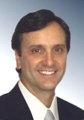

Innovative products for the cosmetic dentist
A Smile design app for iPad and Android tablets
A Before and After book
Dr. Traub has been creating beautiful smiles in south Florida for over 30 years. Before entering dental school he completed a masters degree program in physics where he worked with the radioactive results of the high energy particles generated by the Mount Sinai Cyclotron in Miami Beach and Jackson memorial hospitals. He then attended Tufts School of Dental Medicine where he graduated in 1979 with honors. After graduation he returned to Mount Sinai to complete a one year general practice residency program. Since completing the program he has been continually expanding his education and experience, taking hundreds of hours of continuing education every year, to offer the most advanced dental care available. From common general dental needs through the vast array of cosmetic treatments to the latest implant and laser technology.
With a special interest in cosmetics, Dr. Traub has developed an internationally known dental cosmetic computer imaging system (called Digital Dentist) that is used in over 30 countries. He is the co-author of the Smile Style Guide, a book referenced by over 100 high-end dental labs and thousands of dentists around the world. He has also developed a digital smile library that has been incorporated into the programs of several of the well known dental software manufacturers. This ubiquitous recognition of his work is extraordinary! His latest development is in mobile technology where he has taken the concept of the smile guide into the portable and interactive world of the computer tablet.
Dr. Traub has lectured to dentists nationally about cosmetic dentistry, cosmetic simulations and digital photography. He has been asked to speak and has appeared in private venues as well as prestigious programs such as the American Academy of Cosmetic Dentistry, the Esthetic Professionals, and Boston University postgraduate dental program.
Implant dentistry is another area of special interest. Dr. Traub has worked with some of the finest doctors in the region, to help create protocols for the replacement of single teeth and loose dentures with fixed non-removable teeth in as little as one day. His human interaction software experience and his knowledge of implants and cosmetics has lead to consulting positions with several implant communication software developers.
Dr. Traub has been creating beautiful smiles in south Florida for over 30 years. Before entering dental school he completed a masters degree program in physics where he worked with the radioactive results of the high energy particles generated by the Mount Sinai Cyclotron in Miami Beach and Jackson memorial hospitals. He then attended Tufts School of Dental Medicine where he graduated in 1979 with honors. After graduation he returned to Mount Sinai to complete a one year general practice residency program. Since completing the program he has been continually expanding his education and experience, taking hundreds of hours of continuing education every year, to offer the most advanced dental care available. From common general dental needs through the vast array of cosmetic treatments to the latest implant and laser technology.
With a special interest in cosmetics, Dr. Traub has developed an internationally known dental cosmetic computer imaging system (called Digital Dentist) that is used in over 30 countries. He is the co-author of the Smile Style Guide, a book referenced by over 100 high-end dental labs and thousands of dentists around the world. He has also developed a digital smile library that has been incorporated into the programs of several of the well known dental software manufacturers. This ubiquitous recognition of his work is extraordinary! His latest development is in mobile technology where he has taken the concept of the smile guide into the portable and interactive world of the computer tablet.
Dr. Traub has lectured to dentists nationally about cosmetic dentistry, cosmetic simulations and digital photography. He has been asked to speak and has appeared in private venues as well as prestigious programs such as the American Academy of Cosmetic Dentistry, the Esthetic Professionals, and Boston University postgraduate dental program.
Implant dentistry is another area of special interest. Dr. Traub has worked with some of the finest doctors in the region, to help create protocols for the replacement of single teeth and loose dentures with fixed non-removable teeth in as little as one day. His human interaction software experience and his knowledge of implants and cosmetics has lead to consulting positions with several implant communication software developers.